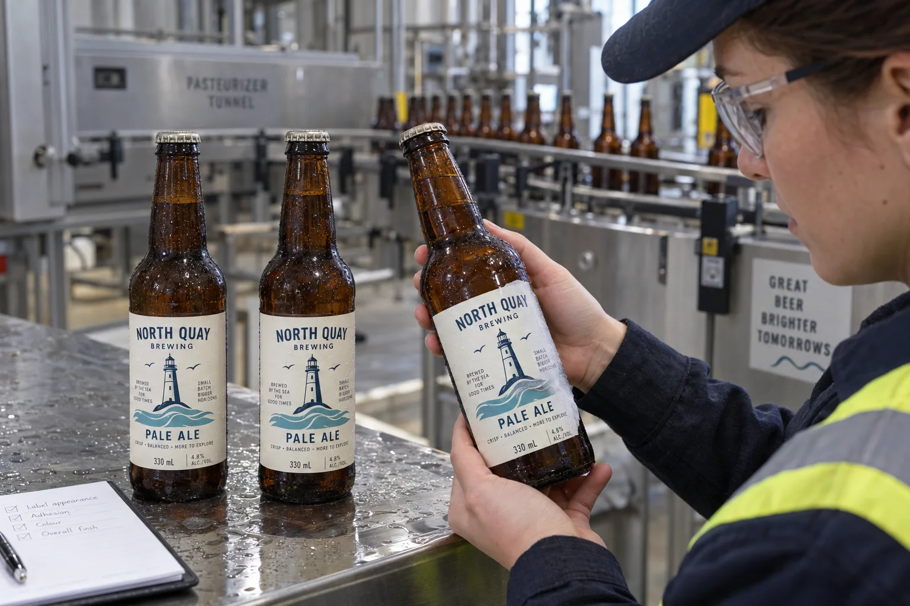

The order of operations changes the label brief
Before I price a beer label, I want to know whether the bottle receives its label before or after tunnel pasteurization. If the decorated bottle runs through a wet-heat process, a shelf sample proves very little. If labels are applied afterward, the application surface and temperature become the immediate questions. The same label drawing can lead to two different material requests.
UPM Raflatac distinguishes ordinary water-resistant beverage labels from products designed to resist water whitening during pasteurization. That does not mean one named material is automatically suitable for every brewery. The tunnel's actual conditions and the printed construction matter.
The persuasive sample can be the wrong sample
Consider a composite craft brewer buying illustrated pale-ale labels for a new bottle. A supplier hands over a beautiful bottle that spent a night in an ice bucket. The brewer approves it. Weeks later, the contract bottler says the decorated bottles pass through a tunnel before packing. I would reopen the material approval, even if the first sample looked perfect. The earlier test answered a colder and simpler question.
A second brewer labels only after its heat treatment. Its main risk may be applying labels to bottles that have not reached the agreed dry surface condition. An expensive pasteurization construction might not solve a wet-application problem. I would ask both brewers for the line sequence before proposing a stock.
Inspect more than whether the label is still attached
| Check | What to record | Why it matters |
|---|---|---|
| Water whitening | Clouding on arrival, after cooling and after storage | Shelf appearance may change over time |
| Edge adhesion | First point of lift and bottle surface | A bond can fail before the panel detaches |
| Ink and finish | Rubbing, scuffing or color change | Printed construction is the product sold |
| Barcode and copy | Readability on finished dry bottles | Appearance and data must both survive |
Agree the trial with the bottler: actual bottle, filled product or suitable production surrogate, normal label application, representative tunnel cycle and normal downstream handling. Do not invent a universal time-temperature target from an online guide. The bottler owns the process, and any food-safety validation is separate from a label-appearance trial.
Run a fair comparison
Keep the artwork and bottle lot fixed while comparing construction options. Record when the bottle was labeled, the dry or wet surface condition, and which side of the bottle faced sprays or mechanical contact. Retain both good and failed samples. A laboratory water dip can screen candidates, but I would not call it proof of line performance.
Ask whether the proposed film, adhesive, ink and protective finish were tested together. A supplier may have data for a face material, while the final converter uses a different ink or varnish. A production-like sample closes that gap more effectively than a longer brochure.
Our buying view
The cheapest test is to ask the bottler one question
I would rather discover the tunnel in the RFQ than after printing ten cases of labels. If the bottles really go through it, the trial budget is justified. If they do not, we can keep the brief focused and avoid charging the buyer for a performance claim it never needs.
Send this with the label request
- Bottle type and whether labeling happens before or after treatment.
- Process owner and the cycle information they will share for a label trial.
- Expected cold storage, condensation and packing abrasion.
- Required appearance and barcode acceptance after the full process.
- Retained sample, approval method and who signs off at the bottler.
Our hot-fill label guide covers a different process sequence. For labels used on chilled glass without tunnel treatment, see glass bottle condensation.
Frequently asked questions
Are waterproof labels automatically pasteurization resistant?
No. Cold-water resistance and performance through a specific wet-heat and cooling cycle are different questions. Test the complete printed label on the actual bottle.
What is water whitening?
Some label constructions appear cloudy after exposure to water or wet heat. The appearance, its timing and whether it recovers should be recorded rather than assumed acceptable.
Should labels be applied before or after pasteurization?
That depends on the bottling process and equipment. Confirm the real sequence with the bottler before selecting the construction or running a trial.
Related buyer guides
Review your label specification
Send package photos, label dimensions, material details, quantity and application conditions. Include good and failed samples where possible so the discussion starts with evidence.